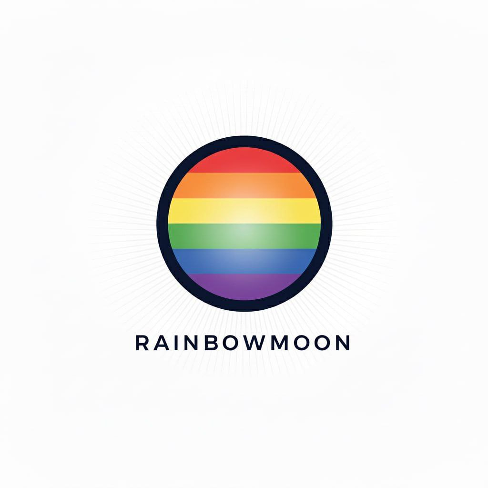

🌙

Point & Line · RainbowMoon
Titan Tracker
거인의 어깨 위에서
더 멀리 바라보다
137명 거장의 시그널을 AI가 교차분석하는 인텔리전스 플랫폼
"If I have seen further, it is by standing on the shoulders of giants." — Isaac Newton
137
추적 대상 거인
9
카테고리
24/7
실시간 피드
📝
Insights
📊
Dashboard
🎯
Signals
📰
Digest
🧠
Study
🔍
Search
📋
Report
📖
Full List
✕
📝 Insights
어떤 타이탄을 분석할까요?
⚡ 빠른 선택
🏢 기업별
📂 섹터별
선택한 섹터로 이동 →
또는 전체 보기로 바로 이동
🏆 Popular Titans
조회수 기준 Top 5
🏛️ Titans
Titans
전체 상세 보기 →
ALL 137 TITANS
전체
🤖 AI
🔬 과학
💻 테크
💼 비즈니스
🧠 사상
🧬 헬스
💰 금융
🎨 디자인
117명
#
이름
카테고리
영향력
채널
키워드
거인들의 생각을 추적하세요.
새로운 Titan이 지속적으로 추가됩니다.